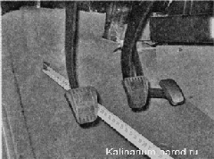
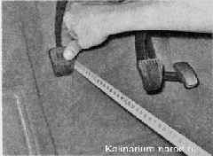

Проверка технического состояния сцепленияСцепление во включенном состоянии (при отпущенной педали) не должно «пробуксовывать» и без потерь передавать крутящий момент от двигателя к трансмиссии, а при нажатой педали сцепления полностью отключать трансмиссию от двигателя. Включение сцепления должно быть плавным — без рывков. Для выполнения работы потребуется линейка или рулетка. Последовательность выполнения 1. Проверяем рабочий ход педали сцепления и при необходимости регулируем его. 2. При неработающем двигателе нажимаем педаль сцепления несколько раз. Убеждаемся в отсутствии заеданий в механизме привода выключения сцепления, отсутствии скрипов, стуков и других посторонних шумов. 3. Линейкой или рулеткой измеряем расстояние от пола до наружной поверхности педали сцепления. 
4. Нажимаем педаль до упора в пол и повторяем измерения. 
Если полный ход педали превышает 146 мм, отрегулируйте привод выключения сцепления (см. ниже «Привод выключения сцепления — регулировка»). 5. Запускаем двигатель. Если из картера сцепления слышен воющий звук, скорее всего, изношен выжимной подшипник сцепления. Отсоединив трос от вилки привода выключения сцепления (см. ниже, «Трос сцепления — замена») и немного повернув вилку по часовой стрелке, отводим выжимной подшипник от диафрагменной пружины. Если выжимной подшипник неисправен, звук исчезнет. 6. При работающем двигателе нажимаем педаль сцепления до упора и включаем передачу. Включение должно быть легким, без треска и хруста. Если при включении передач слышен треск, а выключение затруднено, сцепление выключается не полностью. 7. При работающем двигателе и включенной первой передаче, постепенно отпуская педаль сцепления, проверяем плавность включения сцепления, отсутствие в момент трогания рывков или посторонних звуков. 8. В движении на третьей или четвертой передачах резко нажимаем на педаль «газа». Если обороты коленчатого вала возрастают быстро, а автомобиль ускоряется вяло, то сцепление «пробуксовывает». Также об этом свидетельствует появление в салоне запаха гари, издаваемого сильно нагретыми фрикционными накладками ведомого диска. Если вышеперечисленные признаки неисправностей в процессе диагностики сцепления не выявлены — сцепление находится в технически исправном состоянии. |